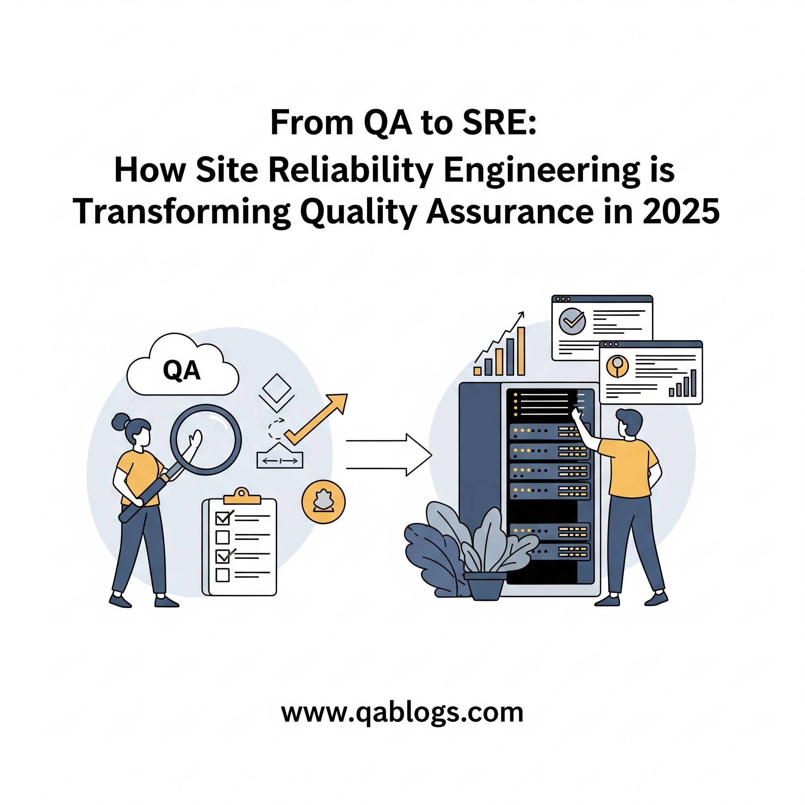

From QA to SRE: How Site Reliability Engineering is Transforming Quality Assurance in 2025

The Quality Assurance (QA) landscape is undergoing a profound transformation in 2025, driven by the integration of Site Reliability Engineering (SRE) principles into traditional QA practices. As software systems grow more complex—think cloud-native architectures, edge computing, and distributed environments—ensuring reliability and performance has become as critical as functional correctness. A recent white paper by Planit, highlighted in a June 3, 2025, post on X by @QA_financial, identifies SRE as one of the seven forces reshaping quality engineering this year. For QA professionals, this shift offers an opportunity to evolve their roles, enhance software quality, and stay relevant in a fast-paced industry. This blog on QA Blogs explores how SRE is transforming QA in 2025, the benefits of this convergence, and actionable steps for QAs to adapt—all while optimizing for SEO to reach testers eager to upskill.
What is Site Reliability Engineering (SRE)?
Site Reliability Engineering (SRE) is a discipline that applies software engineering principles to operations, focusing on ensuring systems are reliable, scalable, and efficient. Pioneered by Google in the early 2000s, SRE has gained widespread adoption, with a 2025 Gartner report noting that 60% of enterprises now incorporate SRE practices to manage modern IT infrastructures.
Key SRE concepts include:
- Service-Level Objectives (SLOs): Measurable goals for system performance, like 99.9% uptime.
- Error Budgets: An allowance for acceptable downtime, balancing reliability with innovation.
- Observability: Monitoring system health through metrics, logs, and traces to detect issues proactively.
While QA traditionally focuses on testing software before release, SRE ensures it performs reliably in production. The convergence of these disciplines in 2025 is redefining how quality is achieved throughout the software lifecycle.
Why SRE is Transforming QA in 2025
The integration of SRE into QA workflows is driven by several industry trends in 2025:
Complex System Architectures
Modern applications—like those leveraging edge computing or microservices—require more than functional testing. SRE's focus on reliability ensures these systems perform under real-world conditions, a gap traditional QA often overlooks.
Shift-Right Testing
SRE emphasizes testing in production (shift-right), complementing QA's shift-left approach (testing early in development). This holistic view ensures quality at every stage, reducing production incidents.
Proactive Reliability
Planit's white paper notes a move away from "chaos testing" (intentionally breaking systems) toward structured reliability practices. SRE's proactive monitoring and error budgeting help QAs anticipate issues before they impact users.
Demand for Speed and Stability
With Agile and DevOps dominating in 2025, teams must deliver fast without sacrificing stability. SRE's error budgets allow QAs to balance rapid releases with reliability goals.
Skillset Evolution
A 2025 LinkedIn report shows a 40% increase in demand for QA professionals with SRE skills, such as observability and incident response, highlighting the need for QAs to adapt.
How SRE is Changing QA Practices
SRE introduces new practices that enhance QA workflows in 2025. Here's how:
1. Focus on Reliability Metrics
SRE shifts QA's focus from pass/fail test cases to reliability metrics like SLOs and service-level indicators (SLIs).
Example: Instead of just verifying a login page works, QA might ensure it responds within 200ms (an SLI) to meet a 99.9% availability SLO.
Impact: QAs gain a deeper understanding of user experience and system performance, aligning testing with business goals.
2. Proactive Monitoring with Observability
SRE emphasizes observability—using metrics, logs, and traces to monitor system health. This allows QAs to detect issues in production before they escalate.
Example: If a payment API's latency spikes, observability tools can alert the team, prompting QA to investigate and test the issue.
Impact: QAs move from reactive bug-fixing to proactive issue prevention, improving software reliability.
3. Error Budgets for Balanced Releases
SRE's error budgets allow teams to release new features while maintaining reliability, giving QA a framework to assess risk.
Example: If an error budget permits 0.1% downtime, QA can approve a release even if minor issues exist, knowing they won't exceed the budget.
Impact: QAs can prioritize critical defects, supporting faster release cycles without compromising stability.
4. Collaboration Across Teams
SRE fosters collaboration between QA, developers, and operations, breaking down silos in DevOps pipelines.
Example: QA works with SREs to define SLOs, developers to fix issues, and ops to monitor production, ensuring a unified approach to quality.
Impact: Enhanced teamwork leads to fewer production issues and smoother workflows.
5. Post-Production Testing
SRE's shift-right approach encourages testing in production, such as canary deployments or A/B testing, to validate real-world performance.
Example: QA might roll out a new feature to 5% of users (canary release) and monitor its performance before a full rollout.
Impact: QAs gain insights into real-world usage, improving test scenarios for future iterations.
Benefits of SRE for QA Teams
Integrating SRE into QA offers significant advantages in 2025:
- Improved Reliability: Focus on SLOs and observability ensures systems perform consistently, reducing user-facing issues.
- Faster Release Cycles: Error budgets allow QAs to approve releases confidently, supporting Agile/DevOps speed.
- Proactive Issue Detection: Observability tools help QAs catch problems early, minimizing downtime.
- Career Growth: Learning SRE skills—like monitoring with Prometheus—makes QAs more marketable, as per LinkedIn's 2025 data.
- Holistic Quality: Combining shift-left and shift-right testing ensures quality throughout the software lifecycle.
Challenges for QAs Transitioning to SRE
While the benefits are clear, QAs may face hurdles when adopting SRE practices:
- Learning Curve: Concepts like SLOs, observability, and error budgets require new skills outside traditional QA expertise.
- Tooling Complexity: Using tools like Prometheus or Grafana can be daunting for QAs new to monitoring.
- Cultural Shift: Moving from a pre-release focus to lifecycle-wide responsibility may require adjusting team workflows.
- Balancing Priorities: QAs must juggle functional testing with reliability metrics, which can feel overwhelming.
Actionable Steps for QAs to Adapt to SRE in 2025
Here's a practical guide for QAs to embrace SRE principles and transform their roles:
1. Learn SRE Fundamentals
Start by understanding core SRE concepts to build a strong foundation.
- What to Learn: SLOs, SLIs, error budgets, and the difference between reliability and availability.
- Resources: Read Google's free SRE book (available online) or watch YouTube tutorials on SRE basics.
- Tip: Focus on one concept at a time—start with SLOs, then move to error budgets.
2. Master Observability Tools
Observability is key to SRE, and learning relevant tools will empower you to monitor system health.
- Tools to Try: Prometheus (for metrics collection) and Grafana (for visualization) are open-source and widely used.
- How to Start: Set up Prometheus to monitor a simple app (e.g., a local web server) and create a Grafana dashboard to visualize metrics.
- Resource: Grafana's website offers free tutorials for beginners.
3. Integrate Reliability into Test Plans
Incorporate SRE metrics into your QA processes to align with reliability goals.
- How to Do It: Add SLIs (e.g., latency, error rate) to your test plan alongside functional test cases.
- Example: For a login page, test not only that users can log in but also that the response time is under 200ms.
- Tool: Use Postman to measure API response times during testing.
4. Collaborate with SRE Teams
Work closely with SREs to align on goals and learn from their expertise.
- How to Collaborate: Join SRE standups, ask about SLO definitions, and share test results that impact reliability.
- Tool: Use Slack or Microsoft Teams to create a shared channel for QA-SRE communication.
- Tip: Ask SREs to explain their dashboards—you'll learn faster by seeing real-world examples.
5. Practice Shift-Right Testing
Start experimenting with production testing to understand real-world performance.
- How to Start: Work with your team to implement a canary release for a small feature, then monitor its performance using observability tools.
- Tool: Use Jenkins or GitHub Actions to automate canary deployments in your CI/CD pipeline.
- Benefit: You'll gain insights into user behavior, improving your test scenarios.
6. Upskill Through Online Resources
Leverage online platforms to build SRE skills at your own pace.
- Courses: Take "Site Reliability Engineering: Measuring and Managing Reliability" on Coursera (Google Cloud offers a free trial).
- Communities: Join Reddit's r/sre or LinkedIn's "SRE Professionals" group to learn from peers.
- Tip: Dedicate 1 hour weekly to learning—consistency is key!
Real-World Applications
SRE principles can transform QA across industries in 2025:
- E-commerce: Use SLOs to ensure checkout pages load in under 1 second, reducing cart abandonment.
- Healthcare: Monitor patient record systems with observability tools to prevent downtime during critical operations.
- Finance: Apply error budgets to balance frequent app updates with transaction reliability.
FAQs
What is SRE, and how does it relate to QA?
SRE applies software engineering to ensure system reliability, focusing on SLOs and observability. It complements QA by extending quality efforts into production, ensuring software performs reliably.
How can QAs learn SRE skills in 2025?
Start with free resources like Google's SRE book, learn tools like Prometheus and Grafana, and collaborate with SRE teams to gain hands-on experience.
What tools are best for QA-SRE integration?
Prometheus and Grafana for observability, Jenkins for CI/CD, and Postman for API performance testing are great starting points.
How does SRE improve QA processes?
SRE enhances QA by focusing on reliability metrics, enabling proactive monitoring, and supporting faster, safer releases through error budgets.
Conclusion
The integration of Site Reliability Engineering into Quality Assurance in 2025 is a game-changer, empowering QAs to ensure software quality across the entire lifecycle. By adopting SRE principles—like SLOs, observability, and shift-right testing—QAs can improve reliability, support faster releases, and grow their careers. Start by learning SRE fundamentals, mastering tools like Prometheus, and collaborating with SRE teams to bridge the gap between QA and reliability engineering. As software systems grow more complex, this evolution will position you as a key player in delivering high-quality, reliable applications.
Ready to transform your QA role with SRE? Explore more insights at QA Blogs and share your journey with our community!
Join Our Community of QA Professionals
Get exclusive access to in-depth articles, testing strategies, and industry insights. Stay ahead of the curve with our expert-curated content delivered straight to your inbox.
Nikunj Mistri
Founder, QA Blogs
About the Author